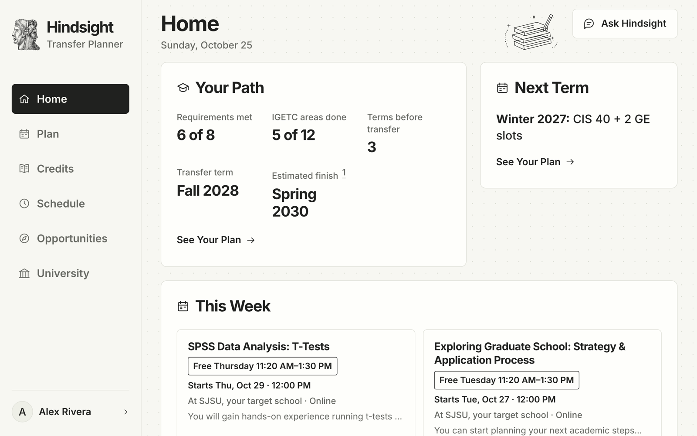
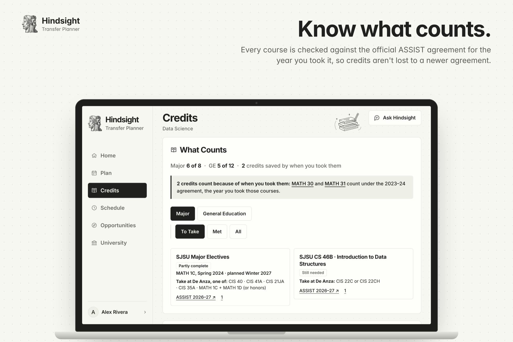
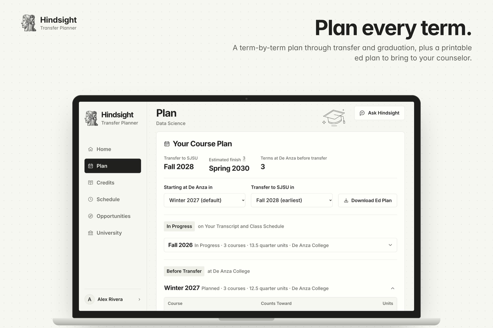
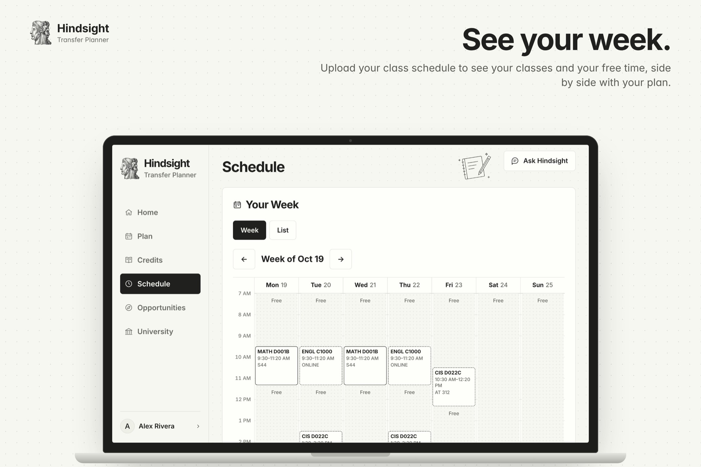
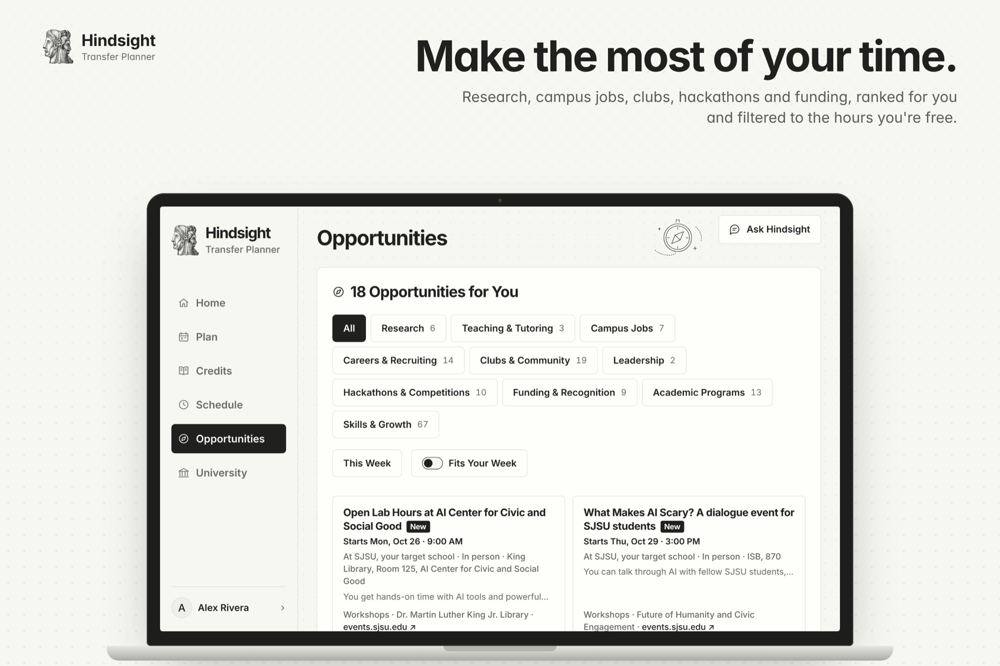
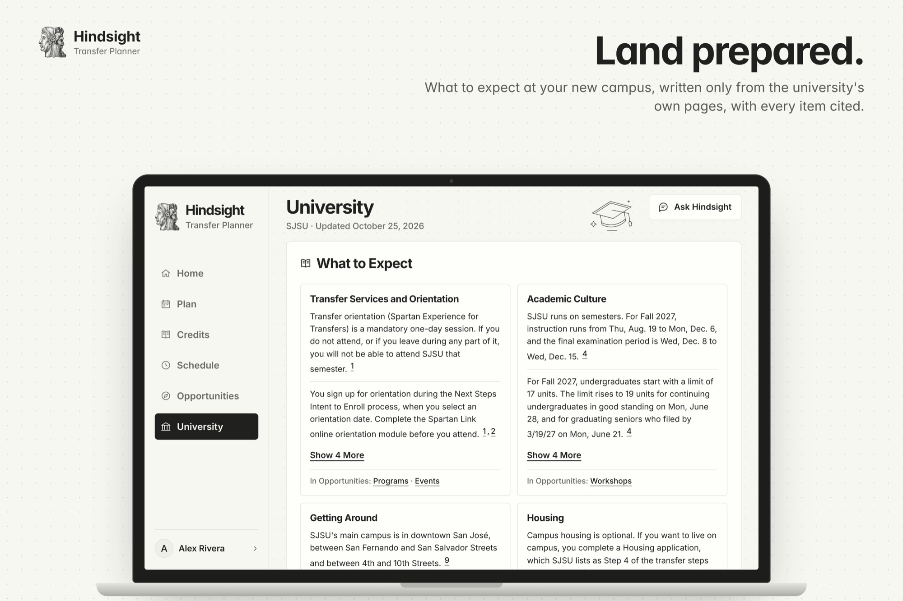
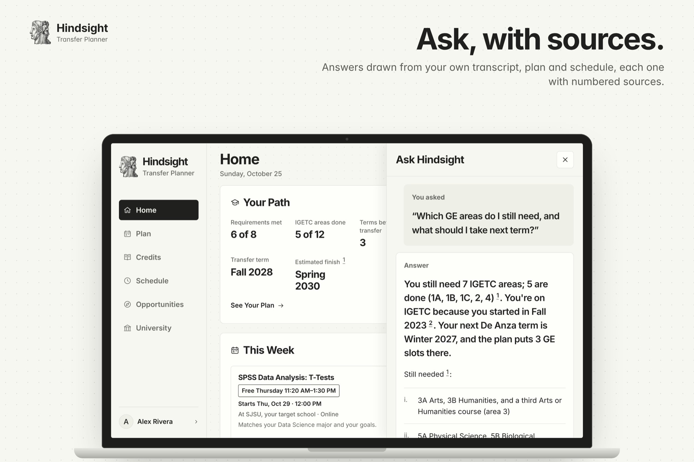

Transfer planner · Built at Cal Hacks 13.0
Your whole path through college, in one place.
Hindsight is a transfer planner for California community-college students, from the first class to graduation: what your credits count for, a plan for every term, and what’s worth your time this week. It works for any of California’s 116 community colleges and every university each one has ASSIST agreements with, and every answer cites its source.
- Team
- Four people
- When
- Cal Hacks 13.0
- Stack
- Claude, Factory Droid, Apify
- Data
- ASSIST agreements and GE lists

Screens show a fictional student. They are not a live evaluation of a real student.
Why we built it
Three of us, Atishay, Karthik and Amaan, transferred from California community colleges to a CSU or UC. Shiv works in the admissions office at Texas State University and answers transfer-credit questions every day.
Advising meant reading ASSIST together. It never felt personal, and everyone took the same classes without knowing why. A course can transfer as credit and still not count toward the major. An unfinished sequence, a changed course number or an agreement from the wrong year can change the path to graduation.
Many internships and programs close in August and September, right as the first semester starts. We wanted one place that gets students there prepared.
Official sources make the decisions
A deterministic matcher and planner work from ASSIST agreements, GE lists and catalog data. Claude explains the results.
Every claim is cited
Matches link to ASSIST agreements and GE areas to their lists. Code drops any University guide item whose quote isn’t on the page it cites.
Any college, any university
The app names no school. Every college and university pair in ASSIST gets credits, GE progress and community-college terms.
Lead with the next step
The interface leads with the student’s next decision: the next course, the missing GE area, the next deadline.
How it works
Upload the transcript
Claude extracts the course rows. It’s optional: students with no courses yet can continue without one.
Confirm courses
The student reviews every row. Only confirmed rows are saved; the file itself isn’t stored.
Match against ASSIST for the year taken
Each course is checked against the agreement and the Cal-GETC or IGETC list for the year it was taken.
Plan every term
The planner schedules the remaining major courses around prerequisites, then fills missing GE areas before transfer.
See your week
Upload a class schedule to see classes, free time and the campus opportunities that fit it.
What it does






Credits, GE progress and community-college terms work for every college and university pair. The full plan through graduation covers San José State University’s Data Science, B.S. and Economics, B.S. SJSU also has the first University guide and campus opportunities feed.
The campus operator
A Factory Droid service keeps campus opportunities fresh, and repairs a source when it breaks.
Apify’s Cheerio Scraper fetches curated campus calendars and listings. Scheduled runs, every two hours by default, scan those sources, rank the results and write opportunity alerts. Missing dates stay empty, and every listing links to its original page.
When a source returns empty results or an extraction error, Droid can inspect the fetched page, repair that source’s extractor, and rerun extraction to check the fix.
Its permissions are deliberately narrow
- Only failed sources’ extractors. Only existing extractor files associated with failed sources may be patched, with a per-run patch budget.
- No shell, no open web. Shell commands and direct web access are denied; campus operations go through scoped tools.
- Separate users, no API credentials. The API and agent run as separate OS users in the production container. API credentials are withheld from the agent, and run logs redact secrets.
- Everything recorded. Plans, steps, patches, results and errors are recorded in
agent_events. A redeploy resets repairs; the recorded diffs remain for review.
Built with
- Anthropic Claude
- Transcript and class-schedule extraction, source-grounded questions, opportunity explanations and the cited University guide.
- Factory Droid SDK
- Scheduled campus operations and permission-scoped extractor repair.
- Apify
- Cheerio Scraper for campus event and opportunity sources and the University guide’s pages.
- ASSIST
- Official California articulation agreements and Cal-GETC / IGETC course lists.
- React, TypeScript, Vite
- Responsive student workspace and PWA manifest.
- FastAPI, Python
- Matching, planning, service integrations and typed API responses.
- Supabase
- Profiles, confirmed coursework, class schedules, cached agreements and GE lists, opportunities and run events.
- Render
- Static frontend and a shared API and agent container.
Current limits
- A proposal is not a confirmed schedule. Actual course offerings haven’t been verified. University requirements use the SJSU 2025–26 catalog and haven’t been checked against 2026–27.
- The plan covers major requirements and GE. Total degree units, residency and graduation applications are outside it. AP and IB credit and courses from other colleges don’t count toward GE yet.
- Some requirements stay unscheduled. Requirements without a course list, including Data Science domain electives, aren’t planned or counted in the estimated finish.
- Full coverage is SJSU only. Only SJSU’s Data Science and Economics have a plan through graduation, and only SJSU has a University guide and an opportunities feed.
- Profiles live in one browser. Cross-device accounts and persistent conversations are future work.
What’s next
Hindsight is where a student lands before they land at a university.
- Compare schools side by side.
- An application timeline built from the transfer term: UC TAG, UC and CSU applications, ADT and financial-aid deadlines.
- The first semester planned before it starts, with the August–September internships and programs surfaced while the student is still at community college.
- Calendar sync and a weekly digest.
- More campuses with full plans, University guides and opportunity feeds.
- Counselor sharing.